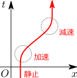
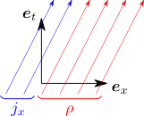

5. ローレンツ変換
ガリレイ変換を、ローレンツ変換で置き換える。
ガリレイ変換を厳密化したい
前章の4.2節では、別の慣性系に移った時に、電荷・電流密度
ρ,j
がどのように変換するかについて述べた。慣性系の間の座標変換（ローレンツ変換）を求めるには、何か別の議論によって、一般の座標変換のもとでの
ρ,j
の変換則を求め、4.2節の結果を再現するような座標変換を見つければ良い。ローレンツ変換は、
v
が小さい時はガリレイ変換で近似できるはずである。
5.1
座標変換による電荷・電流密度
ρ,j
の変換則：式(2)
座標変換のもとで電荷・電流密度
ρ,j
がどのように変化するかを求めるために、電子の軌跡を用いて幾何学的に
ρ,j
を解釈する。（電荷・電流密度を考えているが、電荷の代わりに質量を考えてもよい。）
ρ,j
は、単位ベクトルを通過する世界線の数で表せる

まず、右図のように、時空図を描く。時空図は、横軸・縦軸にそれぞれ空間軸・時間軸を取った図である。時空図は本来、空間3次元＋時間1次元の4次元の図になるが、描画できないので、空間は1次元で表している（空間2次元までは描画できる）。時空図上では、1つの電子は1本の曲線を描く（同図赤線）。この曲線を、（電子の）世界線という。

次に、電荷分布を電子の集合とみなすと、時空図は無数の電子の世界線で覆われることになる。さて、電荷密度
ρ
は、単位体積内に存在する電荷に等しいので、時空図上で見れば、「長さが
1[m]
の単位ベクトル
ex
を横切る電子の世界線の数
nx→t
」と「1つの電子の電荷
−e
」の積となる（右図赤色部分）：（
nx→t
は
ex
を
et
方向に横切る世界線の数という意味である）
ρ=−e⋅nx→t
同様に、電流密度
jx
は、1秒間にある点を通過する電荷に等しいので、上式の
ρ,j
を、「長さが
1[s]
の単位ベクトル
et
を横切る電子の世界線の数
nt→x
」で置き換えたものになる（同図青色部分）：
jx=−e⋅nt→x
なお、
jx
は符号を持つが、世界線が
ex
方向に横切る時に
nt→x
が正、逆方向に横切る時に負となるように定義すればよい。
上記は、空間が1次元の場合であるが、多次元の場合にも容易に拡張できる。実際、2次元空間の場合は
ρ=−e⋅nxy→tjx=−e⋅nty→xjy=−e⋅ntx→y
となる。ただし、
nxy→t
は2つの単位ベクトル
ex,ey
が作る四角形を
et
方向に通過する電子の数である（他も同様）。3次元空間の場合も同様であり、3つの単位ベクトルが作る六面体を通過する世界線の数を考えることになる。
ρ,j
の変換則：式(2)
上記のように考えて何がうれしいかというと、このように幾何学的に考えることで、座標変換のもとで単位ベクトル
et,ex,ey,ez
がどのように変化するかが分かれば、通過する世界線の数の変換も分かるので、電荷・電流密度
ρ,j
の変換則が決まるのである。
ただし、電子の電荷が、速度によって変化してしまうと、それを考慮に入れる必要が出てくる。ここでは、電子の電荷がその速度に依存しないことが実験的に確認されているとする。そうすると相対性原理により、電子の電荷は、速度に依存せず、どの慣性系から見ても同じ値になる。
まず、単位ベクトルの変換則が必要であるが、これは数学的に、以下の【5.1-注1】のようになることが分かる。後は、単位ベクトルが作る平行六面体を通過する電子の世界線の数がどのように変化するかが分かれば、目的である
ρ,j
の変換則が求められることになる。これは、純粋に幾何学的な問題であり、その結果は、以下の【5.1-注2】のようになる。
【5.1-注1】単位ベクトルの変換則：式(1)
時間・空間座標
t,x
をまとめて
⃗x
と表し、単位ベクトル
et,ex,ey,ez
をまとめて
⃗e
と表すことにする：
⃗x=⎡⎢
⎢
⎢⎣txyz⎤⎥
⎥
⎥⎦,⃗e=⎡⎢
⎢
⎢
⎢⎣etexeyez⎤⎥
⎥
⎥
⎥⎦
このように時間成分と空間成分を合わせたものを、4元ベクトルという。
新しい時空の座標系
⃗x′=⃗x′(⃗x)
を取った時、単位ベクトル
⃗e
が
⃗e′
に変化したとする。この時、
⃗e′
は以下のようになる：
⃗e′=Λ−T⃗eΛ=d⃗x′d⃗x=[∂t⃗x′∂x⃗x′∂y⃗x′∂z⃗x′](1)
Λ
は（座標変換の）ヤコビ行列と呼ばれる。なお、
Λ−T
は
(Λ−1)T
の略記である。
【5.1-注2】電荷・電流密度の変換則：式(2)
ある座標系
⃗x
における電荷・電流密度
ρ,j
を、別の座標系
⃗x′
で表すと、以下のようになる：
[ρ′j′]=Λ|Λ|[ρj]Λ=d⃗x′d⃗x(2)
Λ
は、式(
1)のものと同じヤコビ行列であり、
|Λ|
は行列式である。
ただし、
Λ
は座標反転を含まないとする：
|Λ|>0
。
5.2
ローレンツ変換：式(6)
当初の目的である、慣性系間の座標変換（ローレンツ変換）を求めるには、4.2節で述べた、
慣性系間の速度
v
が小さい時の電荷・電流密度
ρ,j
の変換式：
（再掲）
[ρ′j′]=[1−c−2vT−v1][ρj](3)
を再現するように式(
2)の
Λ
を決め、その
Λ
をヤコビ行列に持つような座標変換を求めればよいことになる。
速度が小さい場合のローレンツ変換：式(5)
2つの式(
3)，(
2)を見比べると、座標変換は以下のようになると考えられる：
Λ(v)=[1−c−2vT−v1](4)
ただし、
|Λ|=1−c−2|v|2
なので、両式は厳密には一致していない。しかしこれは問題ない。というのも、式(
3)は
v
が小さい時のもの、即ち、
v
に関して1次近似したものだからである。実際、この近似の範囲では
|Λ|≐1
なので、両式は一致している。
この式(
4)をヤコビ行列に持つような座標変換は、以下のようなものしかない：
[t′x′]=Λ(v)[tx](5)
これを
（
v
が小さい場合の）ローレンツ変換という。
実際には、定数を足す自由度、即ち、時空の原点の位置を取り替えるような自由度もある。しかし、ガリレイ変換の場合（力学編第4章の【4.3-注1】）と同様に、特に考慮する必要もないので簡単のため無視している。そのため、時空の原点が一致するので、例えば粒子の衝突が
(t,x)=(0,0)
で起きたとしたら、それを別の系から見た場合にも、
(t′,x′)=(0,0)
で衝突が起きることになる。
繰り返しになるが、式(
5)が成立するのも、
v
が小さい時にのみである。実際、もしこれが厳密な式であれば、
−v
で変換すれば元に戻るはずなので、
Λ(−v)Λ(v)=1
となっていなければならない。しかし、式(
5)は、
v
の1次の範囲でしかこの式を満たさない。
一般の速度でのローレンツ変換：式(6)
1次近似でのローレンツ変換(
5)がわかったので、これを用いて、一般の速度で成り立つ厳密な式を求めたい。それには、微小な変換を連続してつないでいけばよい。
まず、
K
系から見て
δv
で移動する系
K′
への変換は
[t′x′]≐Λ(δv)[tx]
となるが、ここからさらに、
K′
系から見て同じく
δv
で移動する系
K′′
への変換は
[t′′x′′]≐Λ(δv)[t′x′]≐Λ(δv)2[tx]
となる。これを繰り返せば、大きな速度の場合のローレンツ変換を求めることができる。これは、微小回転を繰り返し作用させることで、一般の回転行列を求めた時の方法と同じである。実際に計算すると、以下の【5.2-注1】のようになる。
【5.2-注1】ローレンツ変換：式(6)
慣性系
K
に対して、速度
v
で移動している慣性系
K′
への座標変換は
[t′x′]=Λ(v)[tx]Λ(v)=[γ−c−2γvT−γv1+(γ−1)^v^vT]γ=1√1−c−2|v|2(6)
となる。この変換をローレンツ変換といい、
γ
をローレンツ因子という。
v
が小さい場合には
γ≐1
と近似できるので、ガリレイ変換で近似できるようになる。また、期待通り、
Λ(−v)Λ(v)=1
となっている。